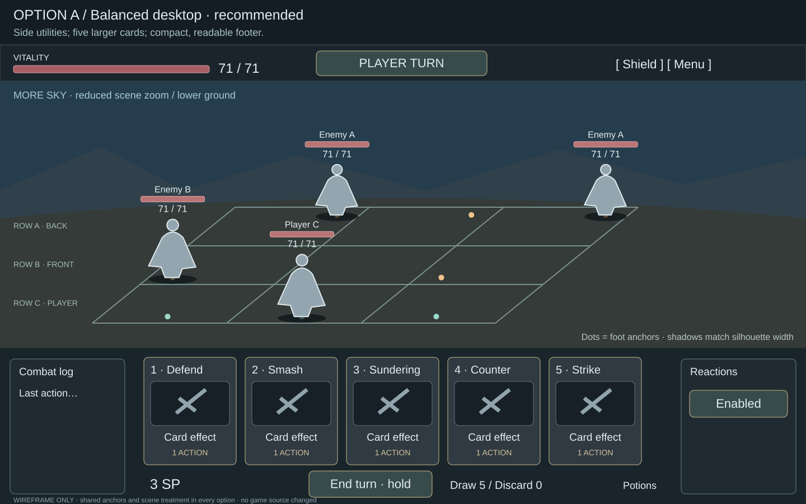
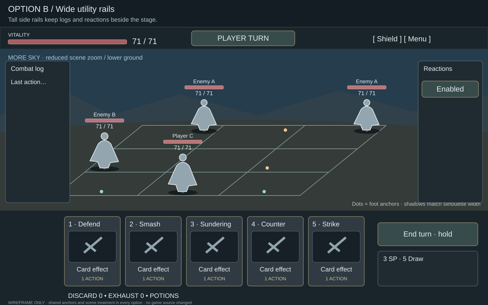
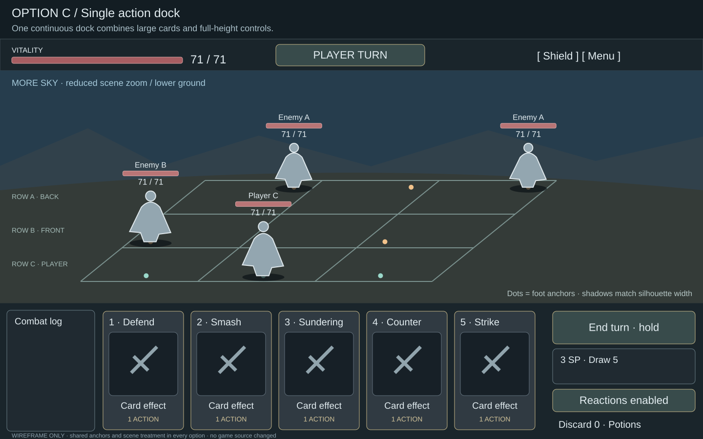
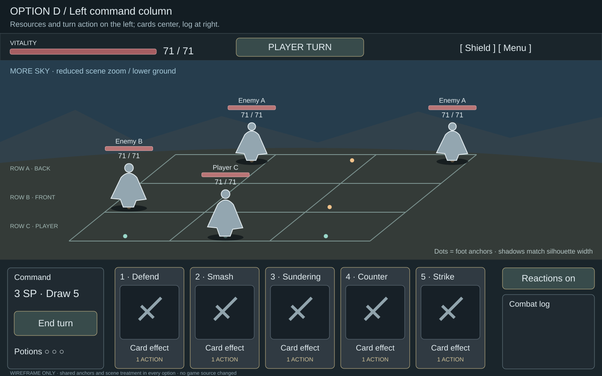
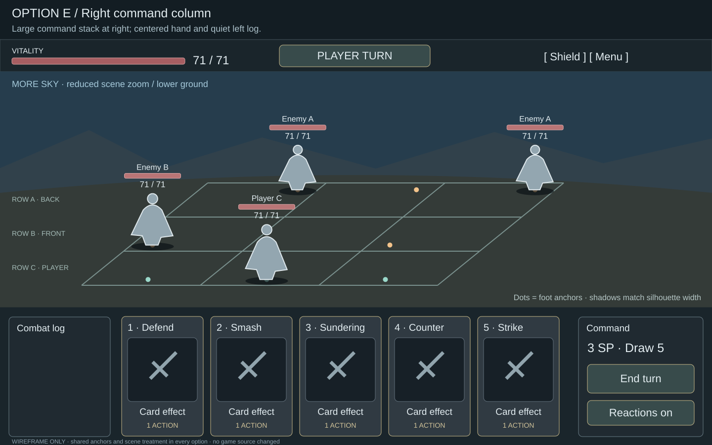
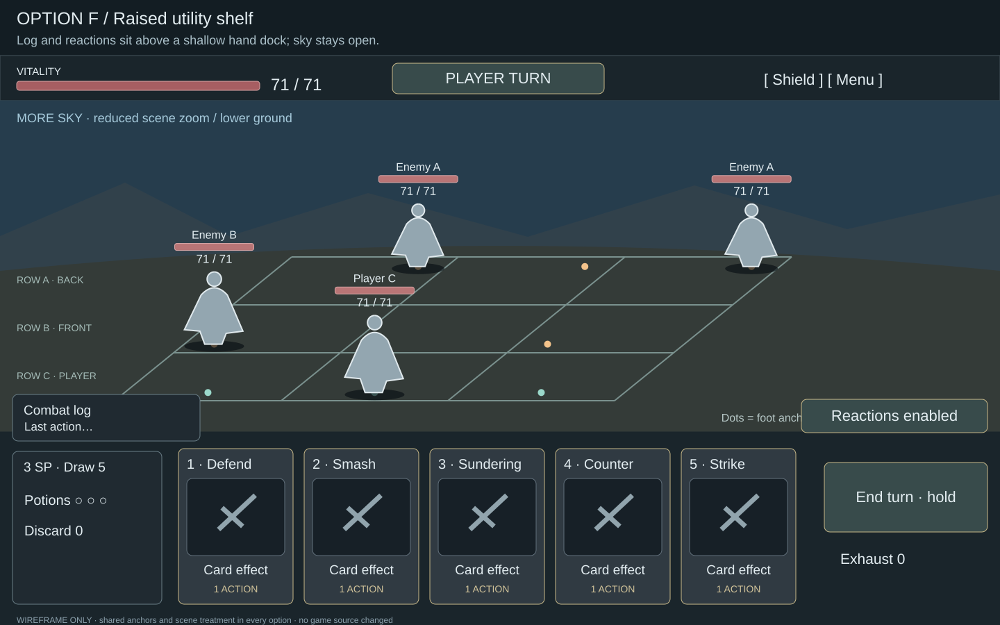
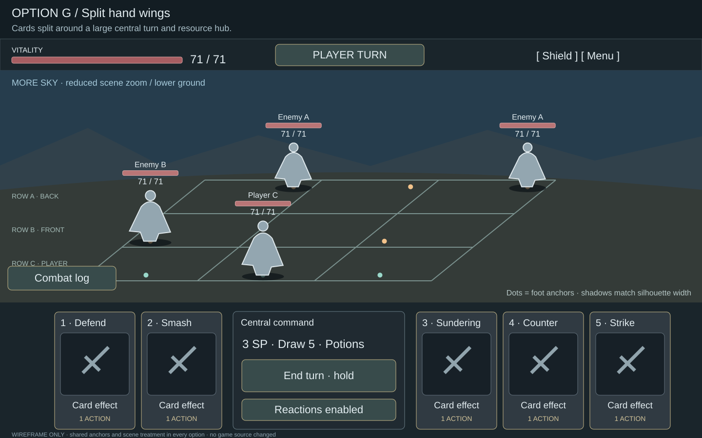
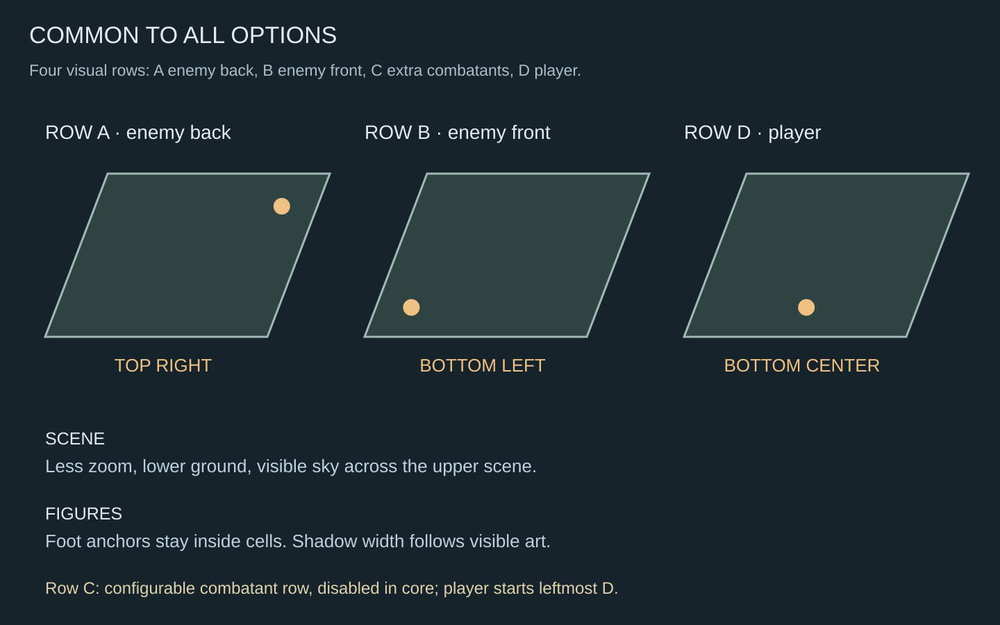

A · Balanced desktop · recommended
Side utilities; five larger cards; compact, readable footer.

B · Wide utility rails
Tall side rails keep logs and reactions beside the stage.

C · Single action dock
One continuous dock combines large cards and full-height controls.

D · Left command column
Resources and turn action on the left; cards center, log at right.

E · Right command column
Large command stack at right; centered hand and quiet left log.

F · Raised utility shelf
Log and reactions sit above a shallow hand dock; sky stays open.

G · Split hand wings
Cards split around a large central turn and resource hub.

Shared anchor rules
Identical geometry in options A–G.
